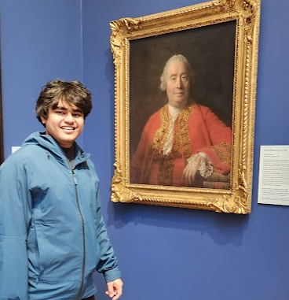

About me
- I am a PhD student at the University of Colorado, Boulder.
- I did my undergrad at BITS Pilani (MSc. Chemistry + B.E. Chemical Engineering) and did my master's thesis at Imperial College London.
- Broadly, I am interested in theoretical methods to investigate charge, spin and energy transfer dynamics in molecular and solid-state systems. Some of the things that I think about:
- Quantum dynamics method development
- Noise spectroscopy and quantum-enhanced sensing
- Nonequilibrium transport in quantum materials
- Chemical physics of optoelectronic devices
- Pretty much anything where you can use fun mathematical models and simulations for studying matter
- I like anime, hiking and strange metal music.